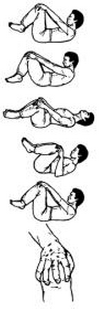

<- back
Next up: Тигр прогибает спину
Удав заглатывает птицу

Исходное положение: Лежим на спине; ноги согнуты в коленях и подтянуты к животу, колени слегка разведены в стороны; голова немного приподнята; кисти рук обхватывают колени, пальцы слегка расставлены; мизинец и большой палец прижимаются к наружной и внутренней поверхности коленного сустава.
Отведя колени руками в стороны и подтягивая их к плечам, делаем вдох, заполняя воздухом верхнюю часть грудной клетки, при этом прогибаем поясницу вверх, голова несколько отклоняется назад. Затем с выдохом сводим колени перед грудью и отжимаем их от себя. В это время плечи и голова приподнимаются, а поясница прижимается к полу. Упражнение повторяется 7 раз, затем движения коленями выполняются по кругу в другую сторону. Ритм дыхания остается постоянным.
Next up: Тигр прогибает спину